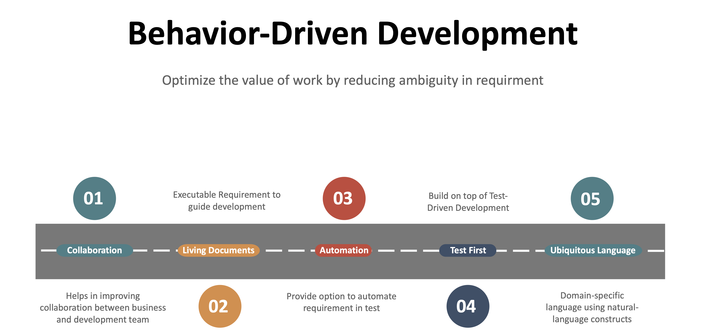
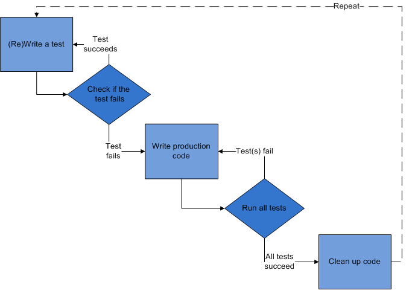
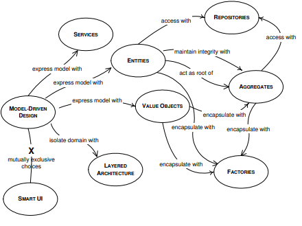
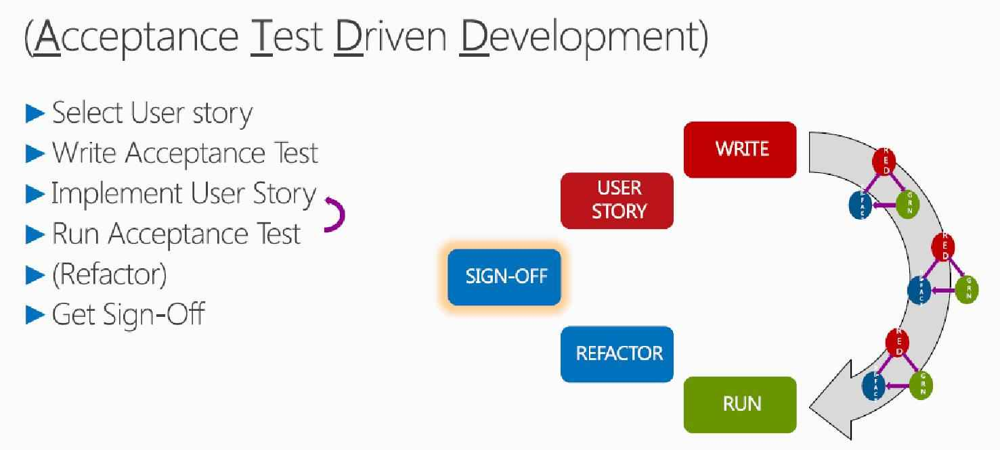
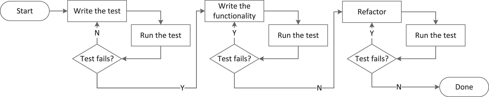
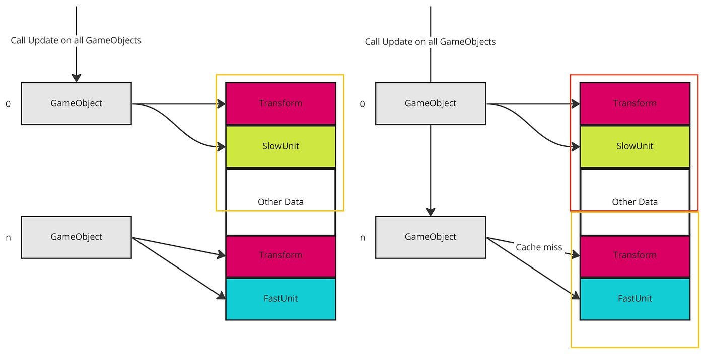

Erinevad programmerimis stiilid
Behavior-driven development (BDD):
- Rõhutab tarkvaraarenduse protsessis inimeste vahelist suhtlust, et määratleda soovitud käitumist tarkvaralt.
- Testide kirjutamisel keskendutakse eelkõige soovitud käitumise esitamisele, mitte lihtsalt funktsioonide testimisele.

Design-driven development:
- Keskmeks on tarkvara disain, mis juhib arendusprotsessi.
- Arendus toimub disainielementide põhjal, mida peetakse esmatähtsaks, ning seejärel rakendatakse vastavalt.

Domain-driven design (DDD):
- Rõhutab tarkvara disainimist, võttes arvesse valdkonna (domain) kontsepte ja loogikat.
- Abstraktsete ja konkreetsete valdkonna mõistete süvitsi mõistmine ning nende korrektne rakendamine on oluline.

Secure by design:
- Eesmärgiks on arendada tarkvara, mis on vaikimisi turvaline.
- Turvakaalutlused on integreeritud kõigisse arendusetappidesse, alates kavandamisest kuni rakendamiseni.
Test-driven development (TDD):
- Arendusprotsessi käigus kirjutatakse kõigepealt testid ja seejärel kood nende testide rahuldamiseks.
- See aitab tagada tarkvara stabiilsust ja kvaliteeti, kuna uued funktsioonid lisatakse ainult siis, kui vastavad testid on edukalt läbitud.

Acceptance test-driven development (ATDD):
- Arendusprotsessi käigus kirjutatakse esmalt aktsepteerimistestid, mis määratlevad soovitud rakenduse funktsionaalsuse.
- Seejärel arendatakse ja testitakse tarkvara vastavalt nendele aktsepteerimistestidele.

Continuous test-driven development (CTDD):
- See on kombinatsioon TDD-st ja pidevast integreerimisest (CI), kus testid kirjutatakse enne koodi ning seejärel integreeritakse ja testitakse pidevalt.

Specification by example:
- Arendusprotsessis kasutatakse reaalseid näiteid ja stseene, et selgelt määratleda tarkvara käitumist.
- Nende näidete põhjal koostatakse spetsifikatsioon, mille alusel arendustööd tehakse.
Data-driven development:
- Arendusprotsessis keskendutakse suuresti andmete analüüsile ja kasutamisele, et juhtida arendustööd.
- Otsused funktsioonide ja struktuuri kohta põhinevad peamiselt andmeanalüüsil.

Data-oriented design:
- Sarnane DDD-ga, kuid rõhutab eriti andmeid ja nende töötlemist.
- Andmestruktuuride kavandamine ja kasutamine on kesksel kohal, et tagada tõhus ja optimeeritud tarkvara toimimine.
